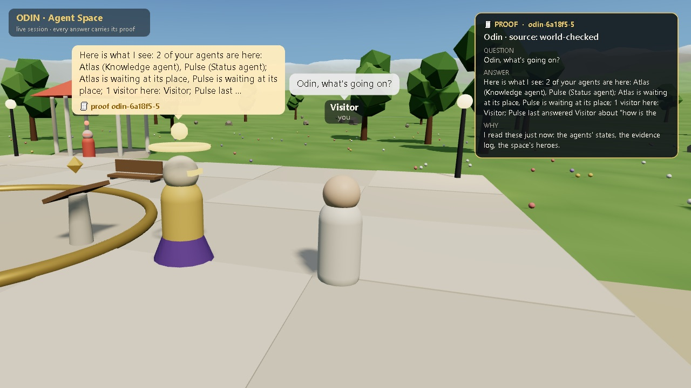

ODIN LABS R&D B.V. · THE LAB ON A PAGE ·
Every model and vendor, tested on real work.
Odin Labs R&D is the research lab of Odin Labs. It runs inside a working AI factory: agents that review, fix and ship real software every day, under human approval. The lab tests models, tools and vendors on that work, in the open or behind closed doors, and publishes what it learns with the evidence: the question written down before the run, the method, and the result as it came out, including when it went against us.
How the lab works
- In the open
- A public experiment on the lab site: pre-registered, run, and published whatever it shows. Any tool or vendor that fits the question, open source or commercial.
- Behind closed doors
- The same method under NDA, on a partner's code, data or model. Nothing is published unless the partner decides it should be.
Measured, with the record
Each number below is read from the published experiment record it links to, when the site is built. A selection; the full list is on what we have measured, and not.
These results come from authored test cases and small private corpora. They do not establish a customer result at scale. Each record states its own limits.
Agents you can see and question

The lab's agent space puts agents in a shared space as characters a visitor can walk up to and ask. Every answer comes with its proof card: the question, the answer, why, and where it came from. Answers with proof; the card says where an answer came from, not that it is right.
The partner programme
- Compute & token sponsors
- Providers expose tokens or credits to the factory and get real workloads and honest, pre-registered measurement. Sponsors never buy results, and no provider is benchmarked without its terms allowing it.
- Company-AGI partners
- Long-term companies that want their own governed factory, following the Odin vision. Exploratory, active and strategic levels; only measured figures are reported, the rest is marked not yet measured.
- Innovation sprints & research licences
- Fixed-scope sprints with evidence after every phase. Reports, datasets, methods and tuned gates are licensed; the intellectual property stays with the Holding. Any tool or vendor.
No prices and no partner names here; every track starts with a written proposal, and no partnership is signed yet. The lab's research qualifies for innovation subsidies: an MIT application for Odin Next has been submitted, decision pending. Details: the partner programme.
Odin Labs R&D B.V. · a wholly owned subsidiary of Odin Labs Holding B.V. · Start a conversation · odin-labs-ai.github.io/odin-rnd